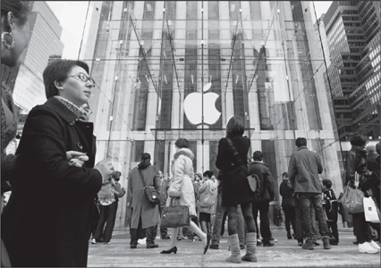

APPLE STORES
Genius Bars and Siena Sandstone

New York's Fifth Avenue store
Jobs hated to cede control of anything, especially when it might affect the customer experience. But he faced a problem. There was one part of the process he didn't control: the experience of buying an Apple product in a store.
The days of the Byte Shop were over. Industry sales were shifting from local computer specialty shops to megachains and big box stores, where most clerks had neither the knowledge nor the incentive to explain the distinctive nature of Apple products. "All that the salesman cared about was a $50 spiff," Jobs said. Other computers were pretty generic, but Apple's had innovative features and a higher price tag. He didn't want an iMac to sit on a shelf between a Dell and a Compaq while an uninformed clerk recited the specs of each. "Unless we could find ways to get our message to customers at the store, we were screwed."
In great secrecy, Jobs began in late 1999 to interview executives who might be able to develop a string of Apple retail stores. One of the candidates had a passion for design and the boyish enthusiasm of a natural-born retailer: Ron Johnson, the vice president for merchandising at Target, who was responsible for launching distinctive-looking products, such as a teakettle designed by Michael Graves. "Steve is very easy to talk to," said Johnson in recalling their first meeting. "All of a sudden there's a torn pair of jeans and turtleneck, and he's off and running about why he needed great stores. If Apple is going to succeed, he told me, we're going to win on innovation. And you can't win on innovation unless you have a way to communicate to customers."
When Johnson came back in January 2000 to be interviewed again, Jobs suggested that they take a walk. They went to the sprawling 140-store Stanford Shopping Mall at 8:30 a.m. The stores weren't open yet, so they walked up and down the entire mall repeatedly and discussed how it was organized, what role the big department stores played relative to the other stores, and why certain specialty shops were successful.
They were still walking and talking when the stores opened at 10, and they went into Eddie Bauer. It had an entrance off the mall and another off the parking lot. Jobs decided that Apple stores should have only one entrance, which would make it easier to control the experience. And the Eddie Bauer store, they agreed, was too long and narrow. It was important that customers intuitively grasp the layout of a store as soon as they entered.
There were no tech stores in the mall, and Johnson explained why: The conventional wisdom was that a consumer, when making a major and infrequent purchase such as a computer, would be willing to drive to a less convenient location, where the rent would be cheaper. Jobs disagreed. Apple stores should be in malls and on Main Streets—in areas with a lot of foot traffic, no matter how expensive. "We may not be able to get them to drive ten miles to check out our products, but we can get them to walk ten feet," he said. The Windows users, in particular, had to be ambushed: "If they're passing by, they will drop in out of curiosity, if we make it inviting enough, and once we get a chance to show them what we have, we will win."
Johnson said that the size of a store signaled the importance of the brand. "Is Apple as big of a brand as the Gap?" he asked. Jobs said it was much bigger. Johnson replied that its stores should therefore be bigger. "Otherwise you won't be relevant." Jobs described Mike Markkula's maxim that a good company must "impute"—it must convey its values and importance in everything it does, from packaging to marketing. Johnson loved it. It definitely applied to a company's stores. "The store will become the most powerful physical expression of the brand," he predicted. He said that when he was young he had gone to the wood-paneled, art-filled mansion-like store that Ralph Lauren had created at Seventy-second and Madison in Manhattan. "Whenever I buy a polo shirt, I think of that mansion, which was a physical expression of Ralph's ideals," Johnson said. "Mickey Drexler did that with the Gap. You couldn't think of a Gap product without thinking of the great Gap store with the clean space and wood floors and white walls and folded merchandise."
When they finished, they drove to Apple and sat in a conference room playing with the company's products. There weren't many, not enough to fill the shelves of a conventional store, but that was an advantage. The type of store they would build, they decided, would benefit from having few products. It would be minimalist and airy and offer a lot of places for people to try out things. "Most people don't know Apple products," Johnson said. "They think of Apple as a cult. You want to move from a cult to something cool, and having an awesome store where people can try things will help that." The stores would impute the ethos of Apple products: playful, easy, creative, and on the bright side of the line between hip and intimidating.
When Jobs finally presented the idea, the board was not thrilled. Gateway Computers was going down in flames after opening suburban stores, and Jobs's argument that his would do better because they would be in more expensive locations was not, on its face, reassuring. "Think different" and "Here's to the crazy ones" made for good advertising slogans, but the board was hesitant to make them guidelines for corporate strategy. "I'm scratching my head and thinking this is crazy," recalled Art Levinson, the CEO of Genentech who joined the Apple board in 2000. "We are a small company, a marginal player. I said that I'm not sure I can support something like this." Ed Woolard was also dubious. "Gateway has tried this and failed, while Dell is selling direct to consumers without stores and succeeding," he argued. Jobs was not appreciative of too much pushback from the board. The last time that happened, he had replaced most of the members. This time, for personal reasons as well as being tired of playing tug-of-war with Jobs, Woolard decided to step down. But before he did, the board approved a trial run of four Apple stores.
Jobs did have one supporter on the board. In 1999 he had recruited the Bronx-born retailing prince Millard "Mickey" Drexler, who as CEO of Gap had transformed a sleepy chain into an icon of American casual culture. He was one of the few people in the world who were as successful and savvy as Jobs on matters of design, image, and consumer yearnings. In addition, he had insisted on end-to-end control: Gap stores sold only Gap products, and Gap products were sold almost exclusively in Gap stores. "I left the department store business because I couldn't stand not controlling my own product, from how it's manufactured to how it's sold," Drexler said. "Steve is just that way, which is why I think he recruited me."
Drexler gave Jobs a piece of advice: Secretly build a prototype of the store near the Apple campus, furnish it completely, and then hang out there until you feel comfortable with it. So Johnson and Jobs rented a vacant warehouse in Cupertino. Every Tuesday for six months, they convened an all-morning brainstorming session there, refining their retailing philosophy as they walked the space. It was the store equivalent of Ive's design studio, a haven where Jobs, with his visual approach, could come up with innovations by touching and seeing the options as they evolved. "I loved to wander over there on my own, just checking it out," Jobs recalled.
Sometimes he made Drexler, Larry Ellison, and other trusted friends come look. "On too many weekends, when he wasn't making me watch new scenes from Toy Story, he made me go to the warehouse and look at the mockups for the store," Ellison said. "He was obsessed by every detail of the aesthetic and the service experience. It got to the point where I said, ‘Steve I'm not coming to see you if you're going to make me go to the store again.'"
Ellison's company, Oracle, was developing software for the handheld checkout system, which avoided having a cash register counter. On each visit Jobs prodded Ellison to figure out ways to streamline the process by eliminating some unnecessary step, such as handing over the credit card or printing a receipt. "If you look at the stores and the products, you will see Steve's obsession with beauty as simplicity—this Bauhaus aesthetic and wonderful minimalism, which goes all the way to the checkout process in the stores," said Ellison. "It means the absolute minimum number of steps. Steve gave us the exact, explicit recipe for how he wanted the checkout to work."
When Drexler came to see the prototype, he had some criticisms: "I thought the space was too chopped up and not clean enough. There were too many distracting architectural features and colors." He emphasized that a customer should be able to walk into a retail space and, with one sweep of the eye, understand the flow. Jobs agreed that simplicity and lack of distractions were keys to a great store, as they were to a product. "After that, he nailed it," said Drexler. "The vision he had was complete control of the entire experience of his product, from how it was designed and made to how it was sold."
In October 2000, near what he thought was the end of the process, Johnson woke up in the middle of a night before one of the Tuesday meetings with a painful thought: They had gotten something fundamentally wrong. They were organizing the store around each of Apple's main product lines, with areas for the PowerMac, iMac, iBook, and PowerBook. But Jobs had begun developing a new concept: the computer as a hub for all your digital activity. In other words, your computer might handle video and pictures from your cameras, and perhaps someday your music player and songs, or your books and magazines. Johnson's predawn brainstorm was that the stores should organize displays not just around the company's four lines of computers, but also around things people might want to do. "For example, I thought there should be a movie bay where we'd have various Macs and PowerBooks running iMovie and showing how you can import from your video camera and edit."
Johnson arrived at Jobs's office early that Tuesday and told him about his sudden insight that they needed to reconfigure the stores. He had heard tales of his boss's intemperate tongue, but he had not yet felt its lash—until now. Jobs erupted. "Do you know what a big change this is?" he yelled. "I've worked my ass off on this store for six months, and now you want to change everything!" Jobs suddenly got quiet. "I'm tired. I don't know if I can design another store from scratch."
Johnson was speechless, and Jobs made sure he remained so. On the ride to the prototype store, where people had gathered for the Tuesday meeting, he told Johnson not to say a word, either to him or to the other members of the team. So the seven-minute drive proceeded in silence. When they arrived, Jobs had finished processing the information. "I knew Ron was right," he recalled. So to Johnson's surprise, Jobs opened the meeting by saying, "Ron thinks we've got it all wrong. He thinks it should be organized not around products but instead around what people do." There was a pause, then Jobs continued. "And you know, he's right." He said they would redo the layout, even though it would likely delay the planned January rollout by three or four months. "We've only got one chance to get it right."
Jobs liked to tell the story—and he did so to his team that day—about how everything that he had done correctly had required a moment when he hit the rewind button. In each case he had to rework something that he discovered was not perfect. He talked about doing it on Toy Story, when the character of Woody had evolved into being a jerk, and on a couple of occasions with the original Macintosh. "If something isn't right, you can't just ignore it and say you'll fix it later," he said. "That's what other companies do."
When the revised prototype was finally completed in January 2001, Jobs allowed the board to see it for the first time. He explained the theories behind the design by sketching on a whiteboard; then he loaded board members into a van for the two-mile trip. When they saw what Jobs and Johnson had built, they unanimously approved going ahead. It would, the board agreed, take the relationship between retailing and brand image to a new level. It would also ensure that consumers did not see Apple computers as merely a commodity product like Dell or Compaq.
Most outside experts disagreed. "Maybe it's time Steve Jobs stopped thinking quite so differently," Business Week wrote in a story headlined "Sorry Steve, Here's Why Apple Stores Won't Work." Apple's former chief financial officer, Joseph Graziano, was quoted as saying, "Apple's problem is it still believes the way to grow is serving caviar in a world that seems pretty content with cheese and crackers." And the retail consultant David Goldstein declared, "I give them two years before they're turning out the lights on a very painful and expensive mistake."
On May 19, 2001, the first Apple store opened in Tyson's Corner, Virginia, with gleaming white counters, bleached wood floors, and a huge "Think Different" poster of John and Yoko in bed. The skeptics were wrong. Gateway stores had been averaging 250 visitors a week. By 2004 Apple stores were averaging 5,400 per week. That year the stores had $1.2 billion in revenue, setting a record in the retail industry for reaching the billion-dollar milestone. Sales in each store were tabulated every four minutes by Ellison's software, giving instant information on how to integrate manufacturing, supply, and sales channels.
As the stores flourished, Jobs stayed involved in every aspect. Lee Clow recalled, "In one of our marketing meetings just as the stores were opening, Steve made us spend a half hour deciding what hue of gray the restroom signs should be." The architectural firm of Bohlin Cywinski Jackson designed the signature stores, but Jobs made all of the major decisions.
Jobs particularly focused on the staircases, which echoed the one he had built at NeXT. When he visited a store as it was being constructed, he invariably suggested changes to the staircase. His name is listed as the lead inventor on two patent applications on the staircases, one for the see-through look that features all-glass treads and glass supports melded together with titanium, the other for the engineering system that uses a monolithic unit of glass containing multiple glass sheets laminated together for supporting loads.
In 1985, as he was being ousted from his first tour at Apple, he had visited Italy and been impressed by the gray stone of Florence's sidewalks. In 2002, when he came to the conclusion that the light wood floors in the stores were beginning to look somewhat pedestrian—a concern that it's hard to imagine bedeviling someone like Microsoft CEO Steve Ballmer—Jobs wanted to use that stone instead. Some of his colleagues pushed to replicate the color and texture using concrete, which would have been ten times cheaper, but Jobs insisted that it had to be authentic. The gray-blue Pietra Serena sandstone, which has a fine-grained texture, comes from a family-owned quarry, Il Casone, in Firenzuola outside of Florence. "We select only 3% of what comes out of the mountain, because it has to have the right shading and veining and purity," said Johnson. "Steve felt very strongly that we had to get the color right and it had to be a material with high integrity." So designers in Florence picked out just the right quarried stone, oversaw cutting it into the proper tiles, and made sure each tile was marked with a sticker to ensure that it was laid out next to its companion tiles. "Knowing that it's the same stone that Florence uses for its sidewalks assures you that it can stand the test of time," said Johnson.
Another notable feature of the stores was the Genius Bar. Johnson came up with the idea on a two-day retreat with his team. He had asked them all to describe the best service they'd ever enjoyed. Almost everyone mentioned some nice experience at a Four Seasons or Ritz-Carlton hotel. So Johnson sent his first five store managers through the Ritz-Carlton training program and came up with the idea of replicating something between a concierge desk and a bar. "What if we staffed the bar with the smartest Mac people," he said to Jobs. "We could call it the Genius Bar."
Jobs called the idea crazy. He even objected to the name. "You can't call them geniuses," he said. "They're geeks. They don't have the people skills to deliver on something called the genius bar." Johnson thought he had lost, but the next day he ran into Apple's general counsel, who said, "By the way, Steve just told me to trademark the name ‘genius bar.'"
Many of Jobs's passions came together for Manhattan's Fifth Avenue store, which opened in 2006: a cube, a signature staircase, glass, and making a maximum statement through minimalism. "It was really Steve's store," said Johnson. Open 24/7, it vindicated the strategy of finding signature high-traffic locations by attracting fifty thousand visitors a week during its first year. (Remember Gateway's draw: 250 visitors a week.) "This store grosses more per square foot than any store in the world," Jobs proudly noted in 2010. "It also grosses more in total—absolute dollars, not just per square foot—than any store in New York. That includes Saks and Bloomingdale's."
Jobs was able to drum up excitement for store openings with the same flair he used for product releases. People began to travel to store openings and spend the night outside so they could be among the first in. "My then 14-year-old son suggested my first overnighter at Palo Alto, and the experience turned into an interesting social event," wrote Gary Allen, who started a website that caters to Apple store fans. "He and I have done several overnighters, including five in other countries, and have met so many great people."
In July 2011, a decade after the first ones opened, there were 326 Apple stores. The biggest was in London's Covent Garden, the tallest in Tokyo's Ginza. The average annual revenue per store was $34 million, and the total net sales in fiscal 2010 were $9.8 billion. But the stores did even more. They directly accounted for only 15% of Apple's revenue, but by creating buzz and brand awareness they indirectly helped boost everything the company did.
Even as he was fighting the effects of cancer in 2011, Jobs spent time envisioning future store projects, such as the one he wanted to build in New York City's Grand Central Terminal. One afternoon he showed me a picture of the Fifth Avenue store and pointed to the eighteen pieces of glass on each side. "This was state of the art in glass technology at the time," he said. "We had to build our own autoclaves to make the glass." Then he pulled out a drawing in which the eighteen panes were replaced by four huge panes. That is what he wanted to do next, he said. Once again, it was a challenge at the intersection of aesthetics and technology. "If we wanted to do it with our current technology, we would have to make the cube a foot shorter," he said. "And I didn't want to do that. So we have to build some new autoclaves in China."
Ron Johnson was not thrilled by the idea. He thought the eighteen panes actually looked better than four panes would. "The proportions we have today work magically with the colonnade of the GM Building," he said. "It glitters like a jewel box. I think if we get the glass too transparent, it will almost go away to a fault." He debated the point with Jobs, but to no avail. "When technology enables something new, he wants to take advantage of that," said Johnson. "Plus, for Steve, less is always more, simpler is always better. Therefore, if you can build a glass box with fewer elements, it's better, it's simpler, and it's at the forefront of technology. That's where Steve likes to be, in both his products and his stores."